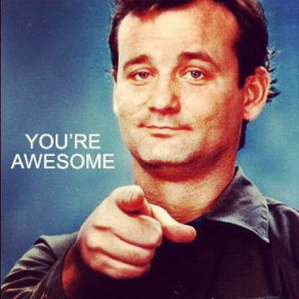
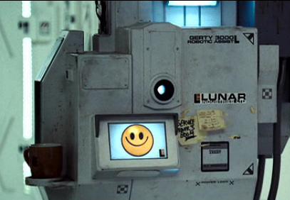

> Hey Bandcamp. Name's Josue and I would LOVE to be your new support guy.
Below you'll find some reasons as to: (a) why you should hire me and (b) why I want to work with you.
> Why Bandcamp?I genuinely love your product and the way you do business. Not only do I think that you guys understand good design, I also think that you're one of the few companies that has a deep understanding of what it really means to "work backwards to the technology". I also sympathize with your "Remote" work culture, love your sense of humor, and feel deeply in tune with your mission of not just helping artists get their music out there, but also helping them reach profit and sustainability.
I also just plain think YOU'RE AWESOME!
> Why hire me?
-> I have impeccable writing: check out the writing samples I sent :)
-> I know enough html/css/js for the job (you're looking at something I hacked together)
-> I have a good working and long term memory, and can turn to loci, peg and/or the linking system if you need me to remember really arcane details!
-> Aussi, je parle français! Ma grammaire c'est pas le meilleur mais ça c'est une chose que je peux ammeliore avec pratique!
Also, I'd like to think that this small site is a representation of who I am and what I am capable of. Sure I may not have the answers to everything, but I am a tenacious researcher who is not afraid to work hard to get things done.
I force myself to write at least a thousand words per day. My Kindle and a copy of Struth's "The Elements of Style" are always within reach. Bad grammar and spelling trigger my Anger Translator.
I've also got some professional experience and have a good track record of getting things done (check my references).
I'm passionate and curious about a variety of things:
I may not be a designer but I have read books like "Don't Make Me think", "The Design of Everyday Things" and Bill Moggridge's "Designing Interactions".
Still not convinced? Why not put me to the test? I'm here to help and only a click away!.
